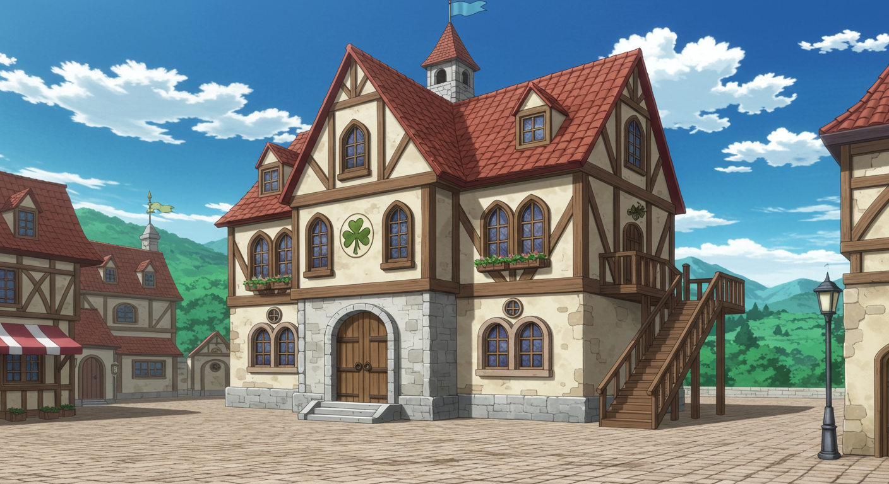
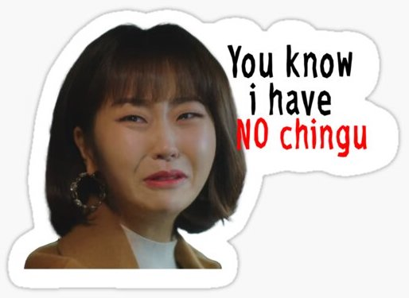
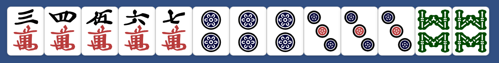
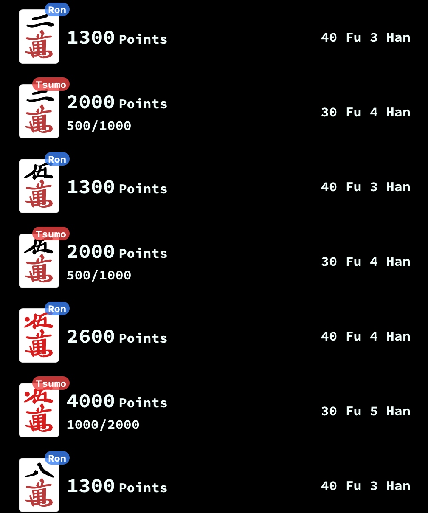
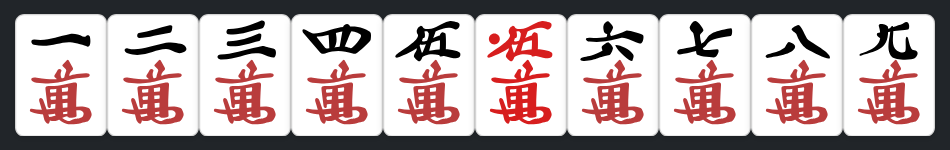
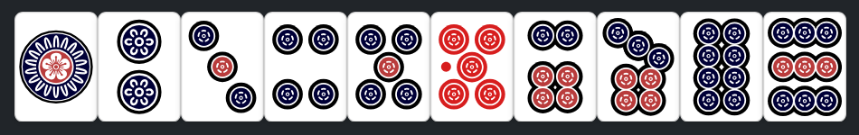
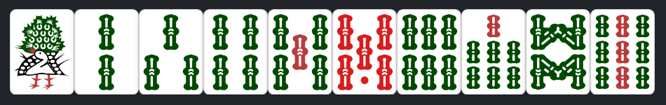
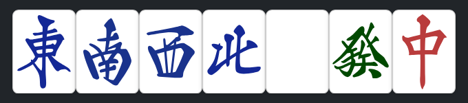

The annual mahjong tournament is coming up, where the best will gather once a year to see who has the most skill (and luck). It’s the only chance for players to rank up in class and a step closer toward one day being able to play in the Pro League. I’ve been stuck at C-Rank for a couple of years. There’s brief moments where I’m able to get into a flow state and am able to read the future but I can never get it to stick or call it on command. I’ve played thousands of games, but my weakness is calculating the scoring and payment system. I’ve been told to track down the Lucky Guild to improve my skills. The Training Arc begins now.

Welcome to the Lucky Guild
Ohayou Adventurer, I see you're new here. This place is a great place to learn tile efficiency and memorize the scoring calculation. Instead of taking 30min to play an east-round you can breeze through a game in 5min since you'll be playing against auto-discarders. I know I know, you won't learn defense here but becoming elite means having a strong foundation. Once you can do tile efficiency subconsciously and predict your final score, you can decide whether to push or to fold.
I haven't played mahjong before in-person. I mostly hang around MJSpirit but when I'm counting my tiles and shanten, they start glaring at me impatiently
The game is built out of an old Konami Mahjong Fight Club Cabinet. Inspired by an older game from Euophrys but uses a motherboard from
livewing.net
. It's improved to simulate an actual mahjong game by making you look at the discards to count the ukeire. Pay attention to how the deadwall looks based on the dice and how many walls there are as the tiles decrease. How the melds are rotated and placed depending on who you stole from. It won't tell you exactly what to do when you are able to open your hand, it only asks "are you sure". Click the NEXT button to pass and continue the game. There are many people who come to Lucky Guild because they don't have any irl people to play with. 
I usually play in english even though I should improve my 日本語. After I get B-rank I want to travel to Japan and visit the Marchao and Octagon Jansou.
There is some kanji to help you memorize them.
Riichi
リーチ
Kan
カン
Pon
ポン
Chii
チー
Ron
ロン
Tsumo
ツモ
East
東
South
南
West
西
North
北
Tiles Left
残牌
Wind Round
場
Furiten
振聴
Can you explain furiten?
Most players find Furiten confusing and don't understand why they can't Ron. The scoring calculator will tell you your shanten, "n to Tenpai". After you are Tenpai, it will tell your winning tiles and score if you Ron or Tsumo. For Example:
34567m222333p88s

Right Sidebar

If any of the tiles you are waiting for while in Tenpai are in your discards you are in discard furiten and unable to Ron the winning tile. You may either wait to draw your winning tile and call Tsumo or change your hand and your waits.
How did you represent your hand like: 34567m222333p88s?
In CUSTOMIZE → CUSTOM HAND you may enter your hand to start the game.
1234506789m - 'm' is Man 萬 tiles

1234506789p - 'p' is Pin 筒 tiles

1234506789s - 's' is So 索 tiles

1234567z - 'z' is honor tiles, wind 風 and dragon 牌

I often hear people complain about how unlucky they are? Is this true?
After each round your starting shanten will be given to you. Your shanten is a good
indicator of whether you will win. Amber has a blogpost about this
here
.
"Most hands are 3 or 4 shanten, with 20% being better and 10% being worse"
You will see that there is a wide variance of shanten across each round. Learn to play optimal tile efficiency to take advantage of your shanten. Knowing your score can help decide whether to fold and avoid dealing-in.